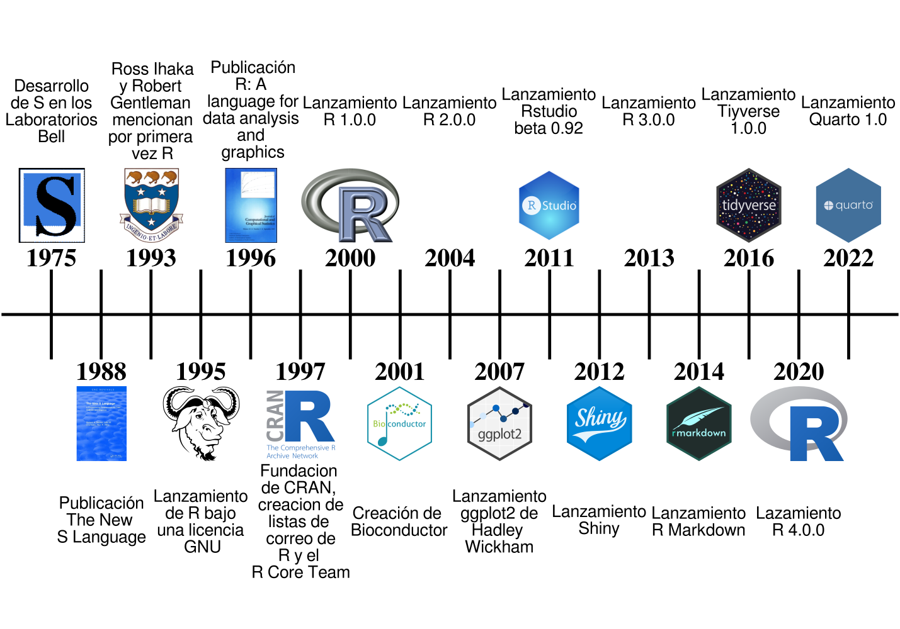
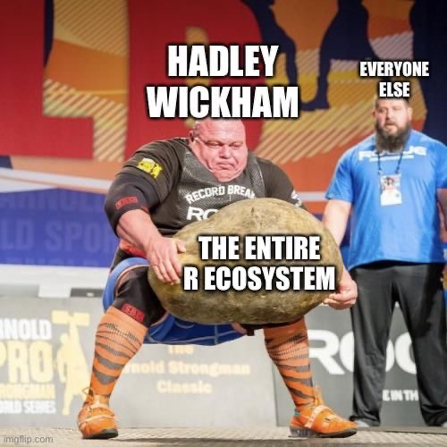
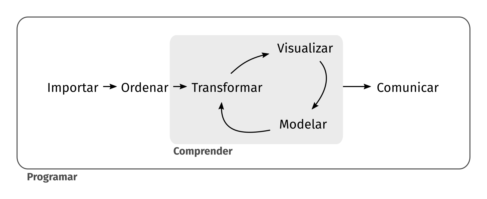
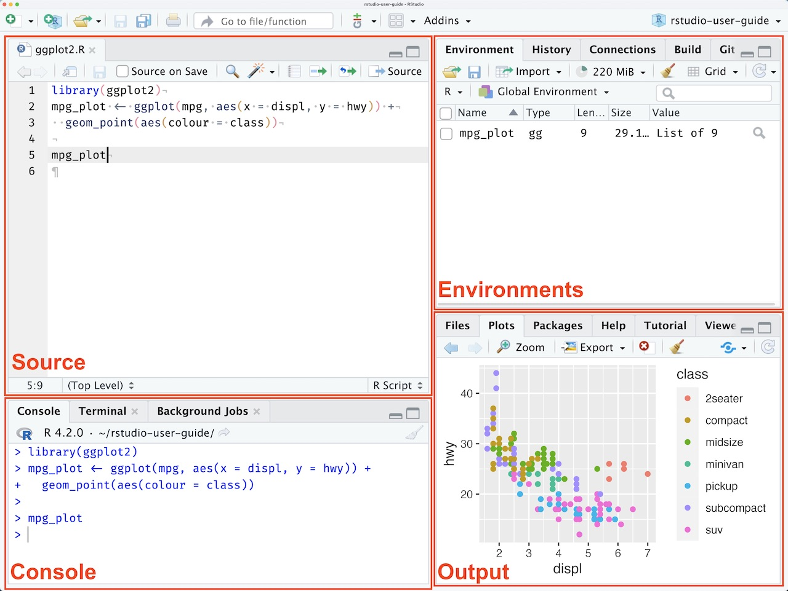
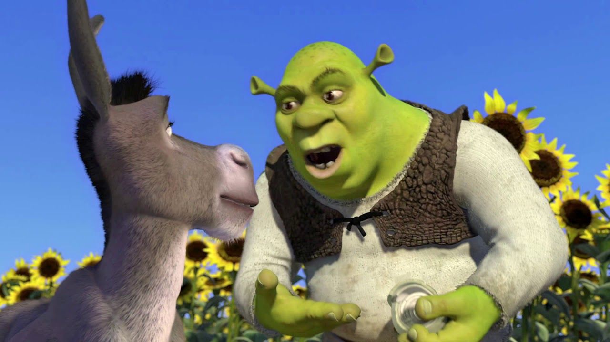
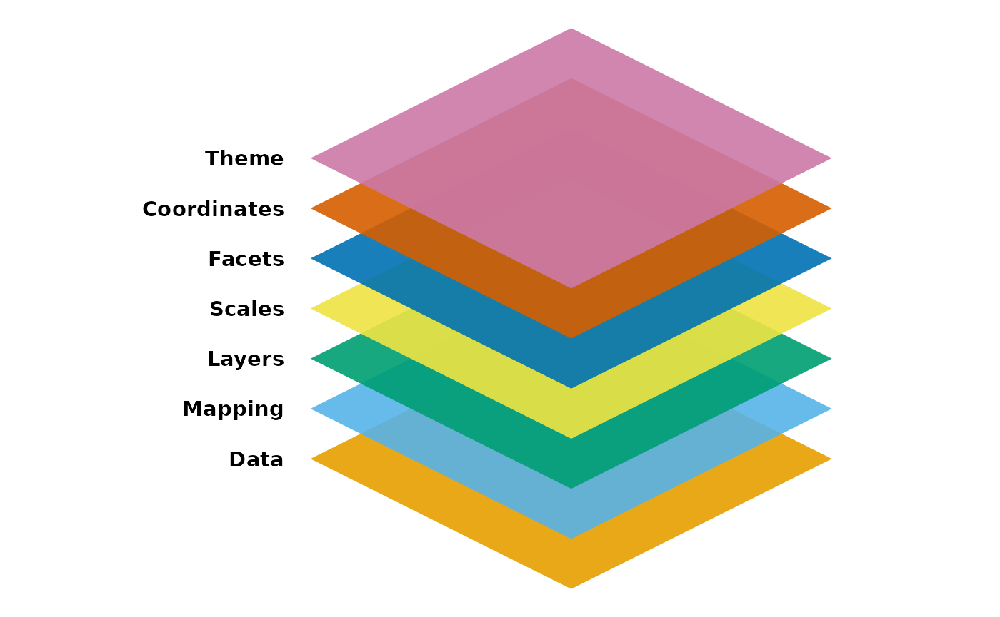
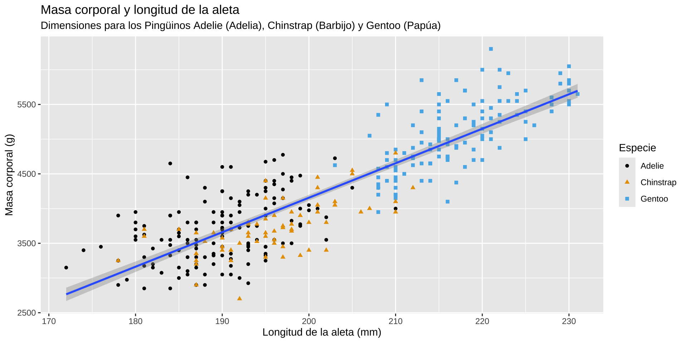
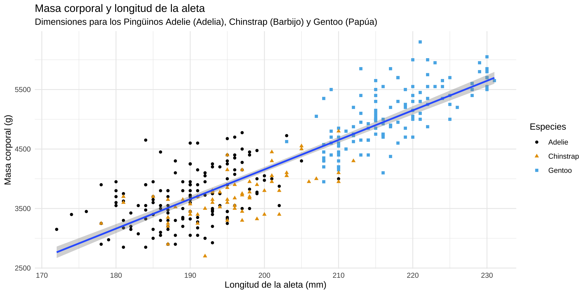
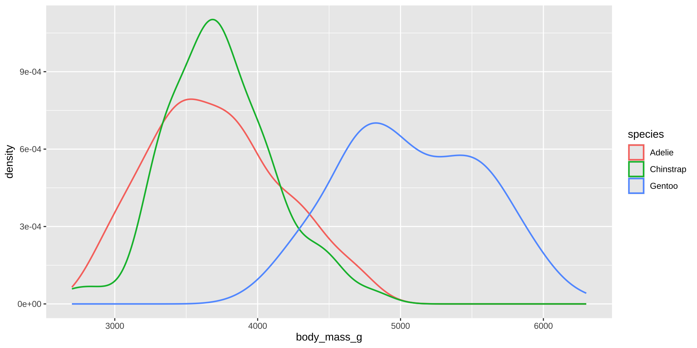
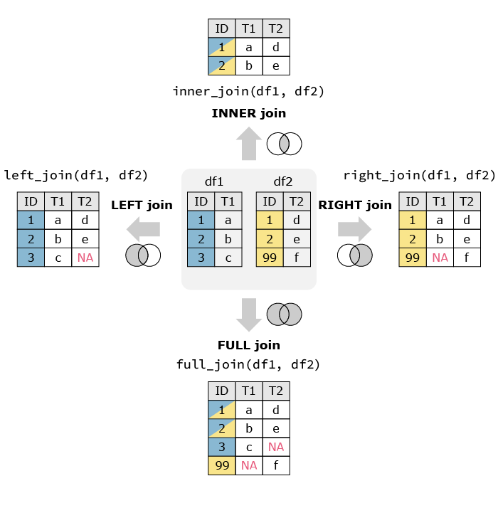

Especie | Isla | Sexo | n | Porcentaje (%) |
|---|---|---|---|---|
Adelie | Biscoe | Hembra | 22 | 50.00 |
Macho | 22 | 50.00 | ||
Dream | Hembra | 27 | 48.21 | |
Macho | 28 | 50.00 | ||
NA | 1 | 1.79 | ||
Torgersen | Hembra | 24 | 46.15 | |
Macho | 23 | 44.23 | ||
NA | 5 | 9.62 | ||
Chinstrap | Dream | Hembra | 34 | 50.00 |
Macho | 34 | 50.00 | ||
Gentoo | Biscoe | Hembra | 58 | 46.77 |
Macho | 61 | 49.19 | ||
NA | 5 | 4.03 |
Introducción a R
Proposito 1
![Un diagrama de dispersión de la masa corporal frente a la longitud de la aleta de los pingüinos, con una línea de mejor ajuste de la relación entre estas dos variables superpuesta. El gráfico muestra una relación positiva, bastante lineal y relativamente fuerte entre estas dos variables. Las especies (Adelia, Barbijo y Papúa) se representan con diferentes colores y la relación entre la masa corporal y la longitud de la aleta es aproximadamente la misma para estas tres especies, y los pingüinos Papúa son #| más grandes que los pingüinos de las otras dos especies.](index_files/figure-revealjs/figura-proposito-1.png)
Proposito 2
Qué es R
R es un sistema para computación estadística y gráficos. Consiste en un lenguaje más un entorno de ejecución con gráficos, un depurador, acceso a ciertas funciones del sistema y la capacidad de ejecutar programas almacenados en archivos de script. R Core Team (2024)

- Lenguaje: R es un lenguaje de programación, con sintaxis y funciones propias.
- Entorno de ejecución: R proporciona un entorno en el que se pueden ejecutar programas escritos en R.
- Gráficos: R incluye capacidades avanzadas para la creación de gráficos.
- Depurador: R incluye herramientas para encontrar y corregir errores en sus scripts.
- Acceso a funciones del sistema: R puede interactuar con el sistema operativo.
- Programas en scripts: se pueden escribir programas y guardarlos en archivos de texto con extensión .R (scripts).
Historia
Algunos hitos importantes en la historia de R. Modificado de Giorgi et al. (2022).
Nuestros guías


Flujo de trabajo en ciencias de datos
En este modelo, todo comienza con la importación y limpieza de los datos. Seguido de un ciclo iterativo de transformación, visualización y modelado. Finalmente, termina con comunicar. Tomado de Wickham et al. (2023).
Programar es como llevar un buen matrimonio
Recordemos donde estamos
Ejecutar código
Ejecutar código en la consola de R es muy sencillo. Sólo tienes que escribirlo al lado de símbolo de mayor que > y presionar enter para ejecutarlo. En la consola de R, el signo > se conoce como prompt, mientras que el código que escribes se llama un comando.
El número que aparece entre corchetes [] informa que esta línea comienza con ese valor del resultado. Algunos comandos devuelven más de un valor y sus resultados pueden ocupar múltiples líneas. Estos números se pueden ignorara en la mayoría de los casos.
Los símbolos +, suma; -, resta; *, multiplicación; /, división; ** o ^, exponencial; son algunos de operadores matemáticos que tiene R.
Otros operadores
El operador dos puntos : devuelve todos los enteros entre dos enteros. Es una forma fácil de crear una secuencia de números.
Los operadores de comparación son: == igual != no igual, > mayor que, < menor que, >= mayor o igual que, <= menor o igual que.
Crear objetos
Las entidades que R crea y manipula se denominan objetos. Un objeto es un nombre que puedes usar para llamar a los datos almacenados. Los objetos se crean utilizando el operador de asignación <-. Cuando se crea un objeto este aparecerá en el environment pane de RStudio. En RStudio el atajo de teclado para <- es Alt--Alt--
En R los nombres se pueden nombrar de cualquier manera, con dos excepciones. Primero, un nombre no puede comenzar con un número. Segundo, un nombre no puede usar algunos símbolos especiales, como ^, !, $, @, +, -, /, o *.
Crear objetos
Se pueden combinar múltiples elementos en un vector usando c()
Operación con vectores
Así mismo, se pueden realizar operación con los vectores.
R ignora cualquier texto después de #. Esto permite escribir comentarios, texto que es ignorado por R pero leído por otras personas. Usa comentarios para explicar el porqué de tu código, no el cómo ni el qué.
Tipos de datos
En R, hay 5 tipos de datos principales:
- numeric:
- double: números reales (con decimales)
- integer: números enteros
- character: cadenas de texto (a.k.a. strings)
- complex: números complejos.
- logical:
TRUE,FALSE,NA. (a.k.a. booleanos)
Para identificar el tipo de datos:
class(): dvuelve la clase de un objeto.typeof(): muestra el tipo de dato subyacente.mode(): informa el modo de almacenamiento.is.numeric(),is.character(),is.logical(), etc.: verifica si el dato es de un tipo específico.
Estructura de datos
En R, estos son las principales estructuras de datos:
- Vectores: unidimensionales y homogéneos.
- Matrices: bidimensionales y homogéneas.
- Arrays: multidimensionales y homogéneos.
- Data frames: bidimensionales y heterogéneos.
- Listas: estructuras heterogéneas y unidimensionales.
- Factores: datos categorizados
Para identificar la estructura de datos:
str(): muestra la estructura compacta del objeto.dim(): devuelve las dimensiones (filas y columnas).length(): número total de elementos.attributes(): verifica los atributos del objeto.summary(): resumen estadístico o descriptivo del objeto.
Funciones
Las funciones son bloques de código que realizan una tarea específica y que pueden ser invocadas (llamadas) desde cualquier parte.
En R las funciones se han de llamar así:
Por ejemplo la función seq() que crea secuencias regulares de números.
A menudo omitimos los nombres de los primeros argumentos en las llamadas a funciones, por lo que podemos reescribir esto de la siguiente manera:
Algunas funciones de R: mean() calcula la media de un vector. sum() suma los elementos de un vector. summary() proporciona un resumen estadístico de un objeto. str() muestra la estructura de un objeto.
Paquetes
Los paquetes son las unidades fundamentales del código reproducible en R. Incluyen funciones reutilizables de R, la documentación que describe cómo usarlas y datos de muestra. Wickham & Bryan (2023) Muchos paquetes de R se encuentran en The Comprehensive R Archive Network (CRAN). CRAN es una red de servidores FTP y web alrededor del mundo que almacenan versiones idénticas y actualizadas del código y la documentación de R.
Instalar y usar paquetes
En R (casi) todos los paquetes se pueden instalar utilizando la función install.packages().
Para poder usar los paquetes se han de cargar (llamar) usando la función library().
Esto no es una pipa |>
R 4.1.0 introdujo el operador |> (pipe). Este operador toma la salida de una función y la pasa a otra función como argumento. Enlaza todos los pasos del análisis de datos haciendo que el código sea más eficiente y legible.
Scripts
Los scripts son archivos que contienen código en lenguaje R, organizado de manera secuencial para realizar operaciones específicas, análisis de datos, o cualquier tarea que se pueda automatizar.
script.r
# Instalar paquetes
install.packages(
c(
"tidyverse",
"palmerpenguins"
"ggthemes"
)
)
# Cargar paquetes
library(tidyverse)
library(palmerpenguins)
library(ggthemes)
# Crea un vector con el gráfico hecho en `ggplot2`
fig_pinguinos <-
palmerpenguins::penguins |>
ggplot2::ggplot(
ggplot2::aes(
x = flipper_length_mm,
y = body_mass_g
)
) +
ggplot2::geom_point()
# Muestras el gráfico
fig_pinguinosEn RStudio hay varias maneras de crear un script y otros archivos.
- En la opción a File -> New File -> New R script
- Usando el atajo de teclado Shift-Ctrl-NShift-Ctrl-N
- En la opción New File, sobre la esquina superior derecha del Source pane, en este icono
- En la opción New Blank File de la pestaña Files en el Output pane
- Usando la Paleta de comandos Ctrl-Shift-PCtrl-Shift-P o Tools > Show Command Palette
El código de un script se puede correr linea por linea usando Ctrl-EnterCtrl-Enter o Ctrl-Shift-EnterCtrl-Shift-Enter corre todo el script.
Que alguien llame a alguien
Antes de pedir ayuda a los demás, suele ser buena idea que intentes ayudarte a ti mismo.
Dentro de R
La función help() o el operador ? proporcionan acceso a documentación de las funciones, conjuntos de datos y otros objetos de R. Por ejemplo: help(lm) o help("lm"), o ?lm o ?"lm". Si el paquete de la función no está cargado se tendría que usar help(rlm, package="MASS"). Para acceder a la documentación de un paquete se ha usar help(package="MASS"). Se puede usar ?? para una palabra o frase en la documentación.
Fuera de R
- Google is your friend
- Stack Overflow
- https://search.r-project.org
- https://rseek.org

Siempre es buena idea hacer un reprex (minimal reproducible example). Un buen reprex facilita que otras personas puedan ayudarlo y, a menudo, usted mismo descubrirá el problema durante el proceso. Hacer un reprex consiste en:
- Hacer que tu código sea reproducible, usando
reprex - Hacerlo mínimo eliminando todo lo que no esté relacionado con el problema.
Actividad
- Crear un script dentro de la carpeta
intro-r - Practicar la sintaxis vista en esta sección
- Consultar la ayuda del paquete
palmerpenguins
15:00
Tidyverse
El tidyverse es una colección estructurada de paquetes de R diseñados para la ciencia de datos. Todos los paquetes comparten una filosofía de diseño subyacente, una gramática y estructuras de datos. Wickham et al. (2019).
Carguemos el tidyverse y observemos la salida.
console
> library(tidyverse)
── Attaching core tidyverse packages ─────────────────────────────────────── tidyverse 2.0.0 ──
✔ dplyr 1.1.4 ✔ readr 2.1.5
✔ forcats 1.0.0 ✔ stringr 1.5.1
✔ ggplot2 3.5.0 ✔ tibble 3.2.1
✔ lubridate 1.9.3 ✔ tidyr 1.3.1
✔ purrr 1.0.2
── Conflicts ───────────────────────────────────────────────────────── tidyverse_conflicts() ──
✖ dplyr::filter() masks stats::filter()
✖ dplyr::lag() masks stats::lag()
ℹ Use the conflicted package to force all conflicts to become errorsTidyverse y la ciencia de datos

El Tidyverse tiene multipes paquetes que nos ayudaran durante todo el proceso de analizar los datos. Tomado de Çetinkaya-Rundel (2023).
Datos ordenados
Hay tres reglas interrelacionadas que hacen que un conjunto de datos esté ordenado:
- Cada variable es una columna; cada columna es una variable.
- Cada observación es una fila; cada fila es una observación.
- Cada valor es una celda; cada celda es un único valor.

Artículo original Wickham (2014)
Tibbles
- Data frame: estructura de datos bidimensional de variables (en las columnas) y observaciones (en las filas), puede almacenar diferentes tipos de datos.
Sepal.Length Sepal.Width Petal.Length Petal.Width Species
1 5.1 3.5 1.4 0.2 setosa
2 4.9 3.0 1.4 0.2 setosa
3 4.7 3.2 1.3 0.2 setosa
4 4.6 3.1 1.5 0.2 setosa
5 5.0 3.6 1.4 0.2 setosa- Tibble: versión moderna de un data frame, optimizados para un manejo de datos más intuitivo y legible. Pertenece al
tidyverse.
# A tibble: 5 × 8
species island bill_length_mm bill_depth_mm flipper_length_mm body_mass_g
<fct> <fct> <dbl> <dbl> <int> <int>
1 Adelie Torgersen 39.1 18.7 181 3750
2 Adelie Torgersen 39.5 17.4 186 3800
3 Adelie Torgersen 40.3 18 195 3250
4 Adelie Torgersen NA NA NA NA
5 Adelie Torgersen 36.7 19.3 193 3450
# ℹ 2 more variables: sex <fct>, year <int>
Conozcamos los datos
La función dplyr::glimpse() es similar a utils::str(), pero intenta mostrar la mayor cantidad de datos posible.
Rows: 344
Columns: 8
$ species <fct> Adelie, Adelie, Adelie, Adelie, Adelie, Adelie, Adel…
$ island <fct> Torgersen, Torgersen, Torgersen, Torgersen, Torgerse…
$ bill_length_mm <dbl> 39.1, 39.5, 40.3, NA, 36.7, 39.3, 38.9, 39.2, 34.1, …
$ bill_depth_mm <dbl> 18.7, 17.4, 18.0, NA, 19.3, 20.6, 17.8, 19.6, 18.1, …
$ flipper_length_mm <int> 181, 186, 195, NA, 193, 190, 181, 195, 193, 190, 186…
$ body_mass_g <int> 3750, 3800, 3250, NA, 3450, 3650, 3625, 4675, 3475, …
$ sex <fct> male, female, female, NA, female, male, female, male…
$ year <int> 2007, 2007, 2007, 2007, 2007, 2007, 2007, 2007, 2007…Las tres variables de palmerpenguins::penguins que usaremos son:
species: la especie de un pingüino (Adelie, Chinstrap o Gentoo).flipper_length_mm: longitud de la aleta de un pingüino, en milímetros.body_mass_g: masa corporal de un pingüino, en gramos.


Utilice ?palmerpenguins::penguins o ?penguins para saber más sobre los datos.
ggplot2
Sistema para la creación de gráficos. Se basa en la gramática de gráficos (marco teórico desarrollada por Leland Wilkinson para construir gráficos de manera sistemática y coherente), permitiendo construir gráficos de manera declarativa mediante capas de componentes, como datos, escalas, geoms (formas geométricas), facetas y temas.


ggplot2 es como los ogros.
ggplot2.ggplot2 — data
Para comenzar un gráfico, primero definimos un objeto gráfico usando la función ggplot2::ggplot(). El primer argumento de ggplot2::ggplot() son los datos que se utilizará en el gráfico:
ggplot2 — mapping
mapping define cómo las variables de los datos se asignan a propiedades visuales (aesthetics) del gráfico. Se definen con ggplot2::aes(). x e y especifican qué variables se asignarán a los ejes x e y.
ggplot2 — layers: geometry
geometry es el objeto geométrico que se utiliza para representar datos: puntos, líneas o rectángulos. Se definen con geom_*(). A menudo se describen los gráficos por el tipo de geom que utilizan1.
ggplot2 — agregando aesthetics
Podemos agregar más propiedades visuales (aesthetics). ggplot2 asigna un valor único (como color) a cada nivel de una variable categórica y añade una leyenda que lo explica. Este proceso se llama scaling.
ggplot2 — agregando layers
Podemos hacer los gráficos más informativos agregando más layers, ya sean objetos geométricos (geom_*), transformaciones estadísticas (stats_*) o ajustes de posición (position_*).
ggplot2 — asignación global o local
Los aesthetics pueden agregarse de forma global para todo los geom del gráfico o pueden asignarse de forma local para un geom especifico.
ggplot2 — accesibilidad
Generalmente no es una buena idea representar información usando sólo colores, por lo cual podemos combinar con formas o usando paletas de colores apta para personas con limitaciones visuales.
ggplot2 — scales
scales controlan cómo se traducen los datos a propiedades visuales. scales suelen formar parejas con aesthetics, y se representan en los gráficos mediante guías, como ejes o leyendas. ggplot2::labs() y ggplot2::lims() son para los ajustes más comunes de las etiquetas y los límites.
ggplot2::ggplot(
data = palmerpenguins::penguins,
mapping = ggplot2::aes(
x = flipper_length_mm,
y = body_mass_g
)
) +
ggplot2::geom_point(
mapping = ggplot2::aes(
color = species,
shape = species
)
) +
ggplot2::geom_smooth(
method = "lm"
) +
ggplot2::labs(
title = "Masa corporal y longitud de la aleta",
subtitle = "Dimensiones para los Pingüinos Adelie (Adelia), Chinstrap (Barbijo) y Gentoo (Papúa)",
x = "Longitud de la aleta (mm)",
y = "Masa corporal (g)",
color = "Especie",
shape = "Especie"
) +
ggthemes::scale_color_colorblind()
ggplot2 — theme
theme controla casi todos los elementos visuales del gráfico que no están controlados por los datos y es importante para el aspecto del gráfico. Puede utilizarse muchas de las funciones de theme_*( ).
ggplot2::ggplot(
data = palmerpenguins::penguins,
mapping = ggplot2::aes(
x = flipper_length_mm,
y = body_mass_g
)
) +
ggplot2::geom_point(
mapping = ggplot2::aes(
color = species,
shape = species
)
) +
ggplot2::geom_smooth(
method = "lm"
) +
ggplot2::labs(
title = "Masa corporal y longitud de la aleta",
subtitle = "Dimensiones para los Pingüinos Adelie (Adelia), Chinstrap (Barbijo) y Gentoo (Papúa)",
x = "Longitud de la aleta (mm)",
y = "Masa corporal (g)",
color = "Especies",
shape = "Especies"
) +
ggplot2::theme_minimal() +
ggthemes::scale_color_colorblind()
ggplot2 — invocanción
Mientras se aprende, es bueno ser explicito con los argumentos y los valores.
Es común que se omita el nombre de los argumentos o que se adopten estilos o formas de escribir código.
Uno de los estilos recomendables es la guía de estilo del tidyverse
Actividad
- Abrir el archivo
ggplot.qmdque se encuentra en la carpetaintro-r - Realizar la Actividad 1.
15:00
Pausa
10:00
Visualizando distribuciones
Una variable categórica
Una variable es categórica si toma uno de varios valores limitados. Para analizar su distribución, se usa un gráfico de barras, donde la altura indica cuántas observaciones tiene cada valor.
En gráficos de barras con categorías no ordenadas, es útil reordenar las barras por frecuencia. Se hace convirtiendo la variable en un factor y reordenando los niveles con forcats::fct_infreq().
Una variable numérica
Una variable es numérica (o cuantitativa) si puede tomar una amplia gama de valores numéricos y tiene sentido sumarlos, restarlos o calcular promedios con esos valores. Las variables numéricas pueden ser continuas o discretas. Una visualización comúnmente utilizada para distribuciones de variables continuas es un histograma.
Una variable numérica
Un gráfico de densidad es una versión suavizada de un histograma y una alternativa práctica, especialmente para datos continuos que provienen de una distribución subyacente suave. Muestra menos detalles que un histograma, pero puede facilitar la comprensión rápida de la forma de la distribución, especialmente con respecto a la moda y la asimetría.
Visualizando relaciones
Una variable numérica y categórica
Para visualizar la relación entre una variable numérica y una variable categórica, podemos usar diagramas de caja (box plots). Un diagrama de caja es un tipo de representación visual para medidas de posición (percentiles) que describen una distribución. También es útil para identificar posibles valores atípicos.
Una variable numérica y categórica
Alternativamente, podemos hacer gráficos de densidad con ggplot2::geom_density().

Dos variables categóricas
Podemos utilizar gráficos de barras apiladas para visualizar la relación entre dos variables categóricas.
Dos variables numéricas
Un diagrama de dispersión es probablemente el gráfico más utilizado para visualizar la relación entre dos variables numéricas.
Tres o más variables
En ggplot2 podemos incorporar más variables en un gráfico asignándolas a estéticas adicionales. Agregar demasiadas asignaciones estéticas a un gráfico lo hace confuso y difícil de interpretar. Una forma particularmente útil para variables categóricas es dividir el gráfico en facets, subgráficos que muestran cada uno un subconjunto de los datos.
Problemas comunes con ggplot2
Un problema común al crear gráficos con ggplot2 es colocar el + en el lugar incorrecto: debe ir al final de la línea, no al inicio.
Forma incorrecta
Resumen de ggplot2
Actividad
- Abrir el archivo
ggplot.qmdque se encuentra en la carpetaintro-r - Realizar la Actividad 2.
15:00
«En el principio era el Verbo»
Tidyverse y la ciencia de datos
El Tidyverse tiene multipes paquetes que nos ayudaran durante todo el proceso de analizar los datos. Tomado de Çetinkaya-Rundel (2023).
dplyr
dplyr es una gramática de transformación de datos que proporciona un conjunto consistente de verbos (funciones) que ayudan a resolver los desafíos de manipulación de datos más comunes.

Todas las funciones tienen estás características en común:
- El primer argumento es siempre un data frame.
- Los argumentos siguientes suelen describir las columnas sobre las que se va a operar utilizando los nombres de las variables (sin comillas).
- La salida es siempre un nuevo data frame.
Los verbos de dplyr están organizados en cuatro grupos basados en lo que operan:
Filas
arrange()distinct()filter()slice_*()
Columnas
mutate()relocate()rename()select()
Grupos
count()group_by()summarise()
Data frames
*_join()
dplyr — filas: arrange()
arrange() Ordena las filas utilizando los valores de las columnas
# A tibble: 344 × 8
species island bill_length_mm bill_depth_mm flipper_length_mm body_mass_g
<fct> <fct> <dbl> <dbl> <int> <int>
1 Adelie Biscoe 37.8 18.3 174 3400
2 Adelie Biscoe 37.7 18.7 180 3600
3 Adelie Biscoe 35.9 19.2 189 3800
4 Adelie Biscoe 38.2 18.1 185 3950
5 Adelie Biscoe 38.8 17.2 180 3800
6 Adelie Biscoe 35.3 18.9 187 3800
7 Adelie Biscoe 40.6 18.6 183 3550
8 Adelie Biscoe 40.5 17.9 187 3200
9 Adelie Biscoe 37.9 18.6 172 3150
10 Adelie Biscoe 40.5 18.9 180 3950
# ℹ 334 more rows
# ℹ 2 more variables: sex <fct>, year <int>Para ordenar de mayor a menor se ha de usar dplyr::desc() dentro de dplyr::arrange().
# A tibble: 344 × 8
species island bill_length_mm bill_depth_mm flipper_length_mm body_mass_g
<fct> <fct> <dbl> <dbl> <int> <int>
1 Adelie Torgersen 39.1 18.7 181 3750
2 Adelie Torgersen 39.5 17.4 186 3800
3 Adelie Torgersen 40.3 18 195 3250
4 Adelie Torgersen NA NA NA NA
5 Adelie Torgersen 36.7 19.3 193 3450
6 Adelie Torgersen 39.3 20.6 190 3650
7 Adelie Torgersen 38.9 17.8 181 3625
8 Adelie Torgersen 39.2 19.6 195 4675
9 Adelie Torgersen 34.1 18.1 193 3475
10 Adelie Torgersen 42 20.2 190 4250
# ℹ 334 more rows
# ℹ 2 more variables: sex <fct>, year <int>dplyr — filas: distinct()
dplyr — filas: filter()
filter() Mantiene las filas que cumplen una condición
# A tibble: 124 × 8
species island bill_length_mm bill_depth_mm flipper_length_mm body_mass_g
<fct> <fct> <dbl> <dbl> <int> <int>
1 Adelie Dream 39.5 16.7 178 3250
2 Adelie Dream 37.2 18.1 178 3900
3 Adelie Dream 39.5 17.8 188 3300
4 Adelie Dream 40.9 18.9 184 3900
5 Adelie Dream 36.4 17 195 3325
6 Adelie Dream 39.2 21.1 196 4150
7 Adelie Dream 38.8 20 190 3950
8 Adelie Dream 42.2 18.5 180 3550
9 Adelie Dream 37.6 19.3 181 3300
10 Adelie Dream 39.8 19.1 184 4650
# ℹ 114 more rows
# ℹ 2 more variables: sex <fct>, year <int>Hay muchas funciones y operadores que resultan útiles a la hora de construir las expresiones utilizadas para filtrar los datos:
- Operadores de comparación (
==,!=,>,<,>=,<=) - Operadores lógicos (
|,&,!) base::is.na()dplyr::between(),dplyr::near()
dplyr — filas: slice_()*
slice_()* Subconjunto de filas utilizando sus posiciones
# A tibble: 7 × 8
species island bill_length_mm bill_depth_mm flipper_length_mm body_mass_g
<fct> <fct> <dbl> <dbl> <int> <int>
1 Chinstrap Dream 46.9 16.6 192 2700
2 Adelie Biscoe 36.5 16.6 181 2850
3 Adelie Biscoe 36.4 17.1 184 2850
4 Adelie Biscoe 34.5 18.1 187 2900
5 Adelie Dream 33.1 16.1 178 2900
6 Adelie Torgersen 38.6 17 188 2900
7 Chinstrap Dream 43.2 16.6 187 2900
# ℹ 2 more variables: sex <fct>, year <int>Podemos encontrar varias funciones: dplyr::slice(), dplyr::slice_head(), dplyr::slice_tail(), dplyr::slice_min(), dplyr::slice_max(), dplyr::slice_sample().
dplyr — filas: ejemplo
# A tibble: 4 × 8
species island bill_length_mm bill_depth_mm flipper_length_mm body_mass_g
<fct> <fct> <dbl> <dbl> <int> <int>
1 Chinstrap Dream 49.2 18.2 195 4400
2 Chinstrap Dream 50.8 18.5 201 4450
3 Chinstrap Dream 52 20.7 210 4800
4 Chinstrap Dream 52.8 20 205 4550
# ℹ 2 more variables: sex <fct>, year <int>dplyr — columnas: mutate()
mutate() Crear, modificar y eliminar columnas
# A tibble: 344 × 9
species island bill_length_mm bill_depth_mm volume flipper_length_mm
<fct> <fct> <dbl> <dbl> <dbl> <int>
1 Adelie Torgersen 39.1 18.7 766. 181
2 Adelie Torgersen 39.5 17.4 720. 186
3 Adelie Torgersen 40.3 18 760. 195
4 Adelie Torgersen NA NA NA NA
5 Adelie Torgersen 36.7 19.3 742. 193
6 Adelie Torgersen 39.3 20.6 848. 190
7 Adelie Torgersen 38.9 17.8 725. 181
8 Adelie Torgersen 39.2 19.6 805. 195
9 Adelie Torgersen 34.1 18.1 646. 193
10 Adelie Torgersen 42 20.2 888. 190
# ℹ 334 more rows
# ℹ 3 more variables: body_mass_g <int>, sex <fct>, year <int>Hay muchas funciones que pueden ser usadas, ?dplyr::mutate() para ver un listado de ellas.
dplyr — columnas: pull()
pull() Extraer una sola columna
[1] Adelie Adelie Adelie Adelie Adelie Adelie Adelie
[8] Adelie Adelie Adelie Adelie Adelie Adelie Adelie
[15] Adelie Adelie Adelie Adelie Adelie Adelie Adelie
[22] Adelie Adelie Adelie Adelie Adelie Adelie Adelie
[29] Adelie Adelie Adelie Adelie Adelie Adelie Adelie
[36] Adelie Adelie Adelie Adelie Adelie Adelie Adelie
[43] Adelie Adelie Adelie Adelie Adelie Adelie Adelie
[50] Adelie Adelie Adelie Adelie Adelie Adelie Adelie
[57] Adelie Adelie Adelie Adelie Adelie Adelie Adelie
[64] Adelie Adelie Adelie Adelie Adelie Adelie Adelie
[71] Adelie Adelie Adelie Adelie Adelie Adelie Adelie
[78] Adelie Adelie Adelie Adelie Adelie Adelie Adelie
[85] Adelie Adelie Adelie Adelie Adelie Adelie Adelie
[92] Adelie Adelie Adelie Adelie Adelie Adelie Adelie
[99] Adelie Adelie Adelie Adelie Adelie Adelie Adelie
[106] Adelie Adelie Adelie Adelie Adelie Adelie Adelie
[113] Adelie Adelie Adelie Adelie Adelie Adelie Adelie
[120] Adelie Adelie Adelie Adelie Adelie Adelie Adelie
[127] Adelie Adelie Adelie Adelie Adelie Adelie Adelie
[134] Adelie Adelie Adelie Adelie Adelie Adelie Adelie
[141] Adelie Adelie Adelie Adelie Adelie Adelie Adelie
[148] Adelie Adelie Adelie Adelie Adelie Gentoo Gentoo
[155] Gentoo Gentoo Gentoo Gentoo Gentoo Gentoo Gentoo
[162] Gentoo Gentoo Gentoo Gentoo Gentoo Gentoo Gentoo
[169] Gentoo Gentoo Gentoo Gentoo Gentoo Gentoo Gentoo
[176] Gentoo Gentoo Gentoo Gentoo Gentoo Gentoo Gentoo
[183] Gentoo Gentoo Gentoo Gentoo Gentoo Gentoo Gentoo
[190] Gentoo Gentoo Gentoo Gentoo Gentoo Gentoo Gentoo
[197] Gentoo Gentoo Gentoo Gentoo Gentoo Gentoo Gentoo
[204] Gentoo Gentoo Gentoo Gentoo Gentoo Gentoo Gentoo
[211] Gentoo Gentoo Gentoo Gentoo Gentoo Gentoo Gentoo
[218] Gentoo Gentoo Gentoo Gentoo Gentoo Gentoo Gentoo
[225] Gentoo Gentoo Gentoo Gentoo Gentoo Gentoo Gentoo
[232] Gentoo Gentoo Gentoo Gentoo Gentoo Gentoo Gentoo
[239] Gentoo Gentoo Gentoo Gentoo Gentoo Gentoo Gentoo
[246] Gentoo Gentoo Gentoo Gentoo Gentoo Gentoo Gentoo
[253] Gentoo Gentoo Gentoo Gentoo Gentoo Gentoo Gentoo
[260] Gentoo Gentoo Gentoo Gentoo Gentoo Gentoo Gentoo
[267] Gentoo Gentoo Gentoo Gentoo Gentoo Gentoo Gentoo
[274] Gentoo Gentoo Gentoo Chinstrap Chinstrap Chinstrap Chinstrap
[281] Chinstrap Chinstrap Chinstrap Chinstrap Chinstrap Chinstrap Chinstrap
[288] Chinstrap Chinstrap Chinstrap Chinstrap Chinstrap Chinstrap Chinstrap
[295] Chinstrap Chinstrap Chinstrap Chinstrap Chinstrap Chinstrap Chinstrap
[302] Chinstrap Chinstrap Chinstrap Chinstrap Chinstrap Chinstrap Chinstrap
[309] Chinstrap Chinstrap Chinstrap Chinstrap Chinstrap Chinstrap Chinstrap
[316] Chinstrap Chinstrap Chinstrap Chinstrap Chinstrap Chinstrap Chinstrap
[323] Chinstrap Chinstrap Chinstrap Chinstrap Chinstrap Chinstrap Chinstrap
[330] Chinstrap Chinstrap Chinstrap Chinstrap Chinstrap Chinstrap Chinstrap
[337] Chinstrap Chinstrap Chinstrap Chinstrap Chinstrap Chinstrap Chinstrap
[344] Chinstrap
Levels: Adelie Chinstrap Gentoodplyr — columnas: relocate()
relocate() Cambiar el orden de las columnas
# A tibble: 344 × 8
year sex species island bill_length_mm bill_depth_mm flipper_length_mm
<int> <fct> <fct> <fct> <dbl> <dbl> <int>
1 2007 male Adelie Torgersen 39.1 18.7 181
2 2007 female Adelie Torgersen 39.5 17.4 186
3 2007 female Adelie Torgersen 40.3 18 195
4 2007 <NA> Adelie Torgersen NA NA NA
5 2007 female Adelie Torgersen 36.7 19.3 193
6 2007 male Adelie Torgersen 39.3 20.6 190
7 2007 female Adelie Torgersen 38.9 17.8 181
8 2007 male Adelie Torgersen 39.2 19.6 195
9 2007 <NA> Adelie Torgersen 34.1 18.1 193
10 2007 <NA> Adelie Torgersen 42 20.2 190
# ℹ 334 more rows
# ℹ 1 more variable: body_mass_g <int>dplyr::relocate() tiene dos argumentos muy útiles .before y .after.
dplyr — columnas: rename()
rename() Renombrar columnas
# A tibble: 344 × 8
Pygoscelis island bill_length_mm bill_depth_mm flipper_length_mm body_mass_g
<fct> <fct> <dbl> <dbl> <int> <int>
1 Adelie Torger… 39.1 18.7 181 3750
2 Adelie Torger… 39.5 17.4 186 3800
3 Adelie Torger… 40.3 18 195 3250
4 Adelie Torger… NA NA NA NA
5 Adelie Torger… 36.7 19.3 193 3450
6 Adelie Torger… 39.3 20.6 190 3650
7 Adelie Torger… 38.9 17.8 181 3625
8 Adelie Torger… 39.2 19.6 195 4675
9 Adelie Torger… 34.1 18.1 193 3475
10 Adelie Torger… 42 20.2 190 4250
# ℹ 334 more rows
# ℹ 2 more variables: sex <fct>, year <int>La sintaxis siempre es nuevo_nombre = viejo_nombre.
rename_with() renombra columnas utilizando una función.
Si se tiene un montón de columnas con nombres inconsistentes y sería complicado corregirlas todas manualmente, consulte janitor::clean_names().
dplyr — columnas: select()
select() Mantener o eliminar columnas utilizando sus nombres y tipos
# A tibble: 344 × 2
species sex
<fct> <fct>
1 Adelie male
2 Adelie female
3 Adelie female
4 Adelie <NA>
5 Adelie female
6 Adelie male
7 Adelie female
8 Adelie male
9 Adelie <NA>
10 Adelie <NA>
# ℹ 334 more rowsLas selecciones del Tidyverse implementan un dialecto de R en el que los operadores facilitan la selección de variables: : selecciona un rango de variables consecutivas. ! toma el complemento de un conjunto de variables. & y | selecciona la intersección o la unión de dos conjuntos de variables. c() para combinar selecciones.
Además, puede utilizar ayudantes de selección. ?dplyr::select() para ver el listado completo.
dplyr — columnas: ejemplo
# A tibble: 344 × 4
pygoscelis volume body_mass_g sex
<fct> <dbl> <int> <fct>
1 Adelie 766. 3750 male
2 Adelie 720. 3800 female
3 Adelie 760. 3250 female
4 Adelie NA NA <NA>
5 Adelie 742. 3450 female
6 Adelie 848. 3650 male
7 Adelie 725. 3625 female
8 Adelie 805. 4675 male
9 Adelie 646. 3475 <NA>
10 Adelie 888. 4250 <NA>
# ℹ 334 more rowsdplyr — grupos: count()
count() Contar las observaciones de cada grupo
# A tibble: 5 × 3
species island n
<fct> <fct> <int>
1 Adelie Biscoe 44
2 Adelie Dream 56
3 Adelie Torgersen 52
4 Chinstrap Dream 68
5 Gentoo Biscoe 124Al utilizar sort = TRUE como argumento, se mostrará los grupos más grandes en la parte superior.
dplyr::add_count() y dplyr::add_tally() son equivalentes a dplyr::count() y dplyr::tally() pero utilizan dplyr::mutate() en lugar de dplyr::summarise() para añadir una nueva columna con recuentos por grupos.
dplyr — grupos: group_by()
group_by() Agrupar por una o varias variables
# A tibble: 344 × 8
# Groups: species, island [5]
species island bill_length_mm bill_depth_mm flipper_length_mm body_mass_g
<fct> <fct> <dbl> <dbl> <int> <int>
1 Adelie Torgersen 39.1 18.7 181 3750
2 Adelie Torgersen 39.5 17.4 186 3800
3 Adelie Torgersen 40.3 18 195 3250
4 Adelie Torgersen NA NA NA NA
5 Adelie Torgersen 36.7 19.3 193 3450
6 Adelie Torgersen 39.3 20.6 190 3650
7 Adelie Torgersen 38.9 17.8 181 3625
8 Adelie Torgersen 39.2 19.6 195 4675
9 Adelie Torgersen 34.1 18.1 193 3475
10 Adelie Torgersen 42 20.2 190 4250
# ℹ 334 more rows
# ℹ 2 more variables: sex <fct>, year <int>dplyr::group_by() no cambia los datos pero, si observa detenidamente la salida, se dará cuenta de que la salida indica que está «agrupada por» (Groups: species, island [5]). Esto significa que las operaciones posteriores funcionarán ahora por grupo. Por lo cual es recomendable usar dplyr::ungroup() cuando sea necesario.
dplyr — grupos: summarise()
summarise() Resumir cada grupo en una fila
# A tibble: 5 × 3
# Groups: species [3]
species island n
<fct> <fct> <int>
1 Adelie Biscoe 44
2 Adelie Dream 56
3 Adelie Torgersen 52
4 Chinstrap Dream 68
5 Gentoo Biscoe 124La operación de agrupamiento más importante. Reduce el data frame para que tenga una sola fila para cada grupo. dplyr::summarise() y dplyr::summarize() son sinónimos.
Funciones útiles: centrales (base::mean(), base::median()), dispersión (base::sd(), base::IQR(), base::mad()), rango (base::min(), base::max()), posición (dplyr::first(), dplyr::last(), dplyr::nth()), recuento (dplyr::n(), dplyr::n_distinto()), lógicas (dplyr::any(), dplyr::all()).
dplyr — grupos: ejemplo
# A tibble: 13 × 5
# Groups: species, island [5]
species island sex mean_body_mass_g n
<fct> <fct> <fct> <dbl> <int>
1 Adelie Biscoe female 3369. 22
2 Adelie Biscoe male 4050 22
3 Adelie Dream female 3344. 27
4 Adelie Dream male 4046. 28
5 Adelie Dream <NA> 2975 1
6 Adelie Torgersen female 3396. 24
7 Adelie Torgersen male 4035. 23
8 Adelie Torgersen <NA> 3681. 5
9 Chinstrap Dream female 3527. 34
10 Chinstrap Dream male 3939. 34
11 Gentoo Biscoe female 4680. 58
12 Gentoo Biscoe male 5485. 61
13 Gentoo Biscoe <NA> 4588. 5dplyr — data frames
Las uniones de transformación (mutating joins) agregan nuevas variables a un data frame a partir de las observaciones coincidentes en otra tabla. Hay cuatro uniones de transformación: la unión interior (inner join) y las tres uniones exteriores (outer joins).
Las uniones de filtro (filtering joins) filtran observaciones en un data frame con base en si coinciden o no con una observación de otra tabla.
Las operaciones de conjuntos (set operations) que tratan las observaciones como elementos de un conjunto.

Actividad
- Abrir el archivo
dplyr.qmdque se encuentra en la carpetaintro-r - Realizar la Actividad.
15:00
Tidyverse y la ciencia de datos
El Tidyverse tiene multipes paquetes que nos ayudaran durante todo el proceso de analizar los datos. Tomado de Çetinkaya-Rundel (2023).
Importando los datos
Hay varias maneras de importar los datos. Todo depende del formato en que estos se encuentren, aunque lo ideal es siempre tenerlos en formatos de texto plano: .csv, .tsv, txt.
Texto plano

Hay varias funciones: reardr::read_csv(), reardr::read_tsv(), reardr::read_csv2(), reardr::read_delim().

Tablas
Hay varios paquetes para realizar tablas en R. Cada uno con enfoques, curvas de aprendizaje y formatos de salida diferentes. Una forma de agruparlos es si producen tablas estáticas o tablas dinámicas.

Organizando los datos
La idea de una tabla es que sea informativa y legible, por lo cual es recomendable hacer una buena selección de los datos.
# A tibble: 13 × 5
species island sex n percentage
<fct> <fct> <fct> <int> <dbl>
1 Adelie Biscoe female 22 50
2 Adelie Biscoe male 22 50
3 Adelie Dream female 27 48.2
4 Adelie Dream male 28 50
5 Adelie Dream <NA> 1 1.79
6 Adelie Torgersen female 24 46.2
7 Adelie Torgersen male 23 44.2
8 Adelie Torgersen <NA> 5 9.62
9 Chinstrap Dream female 34 50
10 Chinstrap Dream male 34 50
11 Gentoo Biscoe female 58 46.8
12 Gentoo Biscoe male 61 49.2
13 Gentoo Biscoe <NA> 5 4.03knitr::kable()
kable() es un generador de tablas muy simple, y es simple por diseño. Sólo genera tablas para datos estrictamente rectangulares. No puede formatear mucho las celdas de la tabla ni combinar celdas. Algunas de las limitaciones de knitr::kable() pueden ser subsanadas utilizando el paquete kableExtra.
| Especie | Isla | Sexo | n | Porcentaje (%) |
|---|---|---|---|---|
| Adelie | Biscoe | Hembra | 22 | 50.00 |
| Adelie | Biscoe | Macho | 22 | 50.00 |
| Adelie | Dream | Hembra | 27 | 48.21 |
| Adelie | Dream | Macho | 28 | 50.00 |
| Adelie | Dream | NA | 1 | 1.79 |
| Adelie | Torgersen | Hembra | 24 | 46.15 |
| Adelie | Torgersen | Macho | 23 | 44.23 |
| Adelie | Torgersen | NA | 5 | 9.62 |
| Chinstrap | Dream | Hembra | 34 | 50.00 |
| Chinstrap | Dream | Macho | 34 | 50.00 |
| Gentoo | Biscoe | Hembra | 58 | 46.77 |
| Gentoo | Biscoe | Macho | 61 | 49.19 |
| Gentoo | Biscoe | NA | 5 | 4.03 |
gt
gt permite construir una amplia variedad de tablas útiles con un conjunto cohesivo de partes de tabla.
gt — ejemplo
penguins_resumen |>
gt::gt() |>
gt::tab_style(
style = gt::cell_text(
style = "italic"
),
locations = gt::cells_body(
columns = species,
)
) |>
gt::sub_values(
value = "female",
replacement = "Hembra"
) |>
gt::sub_values(
value = "male",
replacement = "Macno"
) |>
gt::cols_label(
species = "Especie",
island = "Isla",
sex = "Sexo",
n = "n",
percentage = "Porcentaje (%)"
) |>
gt::fmt_number(
columns = "percentage",
decimals = 2
) |>
gt::opt_stylize(style = 1)| Especie | Isla | Sexo | n | Porcentaje (%) |
|---|---|---|---|---|
| Adelie | Biscoe | Hembra | 22 | 50.00 |
| Adelie | Biscoe | Macno | 22 | 50.00 |
| Adelie | Dream | Hembra | 27 | 48.21 |
| Adelie | Dream | Macno | 28 | 50.00 |
| Adelie | Dream | NA | 1 | 1.79 |
| Adelie | Torgersen | Hembra | 24 | 46.15 |
| Adelie | Torgersen | Macno | 23 | 44.23 |
| Adelie | Torgersen | NA | 5 | 9.62 |
| Chinstrap | Dream | Hembra | 34 | 50.00 |
| Chinstrap | Dream | Macno | 34 | 50.00 |
| Gentoo | Biscoe | Hembra | 58 | 46.77 |
| Gentoo | Biscoe | Macno | 61 | 49.19 |
| Gentoo | Biscoe | NA | 5 | 4.03 |
flextable
flextable proporciona un marco para crear fácilmente tablas para informes y publicaciones. Un objeto flextable es una representación data.frame compuesto por tres partes (header, body, footer). El paquete proporciona funciones que permiten controlar estas tres partes y texto, párrafos, celdas,formato de borde de cualquier elemento y valores mostrados.
flextable — ejemplo
penguins_resumen |>
flextable::flextable() |>
flextable::mk_par(
j = "species",
value = flextable::as_paragraph(flextable::as_i(species)),
) |>
flextable::mk_par(
i = ~ sex == "female",
j = "sex",
value = flextable::as_paragraph("Hembra")
) |>
flextable::mk_par(
i = ~ sex == "male",
j = "sex",
value = flextable::as_paragraph("Macho")
) |>
flextable::set_header_labels(
species = "Especie",
island = "Isla",
sex = "Sexo",
percentage = "Porcentaje (%)"
) |>
flextable::merge_v(
j = c("species", "island")
) |>
flextable::colformat_char(
j = "sex",
na_str = "NA",
) |>
flextable::theme_apa() |>
flextable::autofit()Especie | Isla | Sexo | n | Porcentaje (%) |
|---|---|---|---|---|
Adelie | Biscoe | female | 22 | 50.00 |
male | 22 | 50.00 | ||
Dream | female | 27 | 48.21 | |
male | 28 | 50.00 | ||
NA | 1 | 1.79 | ||
Torgersen | female | 24 | 46.15 | |
male | 23 | 44.23 | ||
NA | 5 | 9.62 | ||
Chinstrap | Dream | female | 34 | 50.00 |
male | 34 | 50.00 | ||
Gentoo | Biscoe | female | 58 | 46.77 |
male | 61 | 49.19 | ||
NA | 5 | 4.03 |
Recursos
- 1 dataset. 100 visualizations
- Cleaning Biodiversity Data in R
- Data Viz Project
- From Data to Viz
- ggplot2: Elegant Graphics for Data Analysis (3e)
- gt
- Hands-On Programming with R
- R Cookbook, 2nd Edition
- R for Data Science (2e)
- R for Plant Disease Epidemiology
- R Graphics Cookbook, 2nd edition
- The R Graph Gallery
- Tidyverse
- Using the flextable R package
Pausa
15:00
Referencias
Çetinkaya-Rundel, M. (2023). Teaching the tidyverse in 2023. https://www.tidyverse.org/blog/2023/08/teach-tidyverse-23/
Choueiry, G. (2024). Join Dataframes in R: Left/Right/Inner/Full Joins. https://quantifyinghealth.com/join-dataframes-in-r-left-right-inner-full-joins/
Giorgi, F. M., Ceraolo, C., & Mercatelli, D. (2022). The R Language: An Engine for Bioinformatics and Data Science. Life, 12(5), 648. https://doi.org/10.3390/life12050648
Horst, A. M., Hill, A. P., & Gorman, K. B. (2020). palmerpenguins: Palmer Archipelago (Antarctica) penguin data. https://doi.org/10.5281/zenodo.3960218
R Core Team. (2024). R: A Language and Environment for Statistical Computing. R Foundation for Statistical Computing. https://www.R-project.org/
Wickham, H. (2014). Tidy Data. Journal of Statistical Software, 59(10). https://doi.org/10.18637/jss.v059.i10
Wickham, H., Averick, M., Bryan, J., Chang, W., McGowan, L., François, R., Grolemund, G., Hayes, A., Henry, L., Hester, J., Kuhn, M., Pedersen, T., Miller, E., Bache, S., Müller, K., Ooms, J., Robinson, D., Seidel, D., Spinu, V., … Yutani, H. (2019). Welcome to the Tidyverse. Journal of Open Source Software, 4(43), 1686. https://doi.org/10.21105/joss.01686
Wickham, H., & Bryan, J. (2023). R packages: organize, test, document, and share your code (Second edition). O’Reilly.
Wickham, H., Çetinkaya-Rundel, M., & Grolemund, G. (2023). R for data science: import, tidy, transform, visualize, and model data (2nd edition). O’Reilly. https://r4ds.hadley.nz